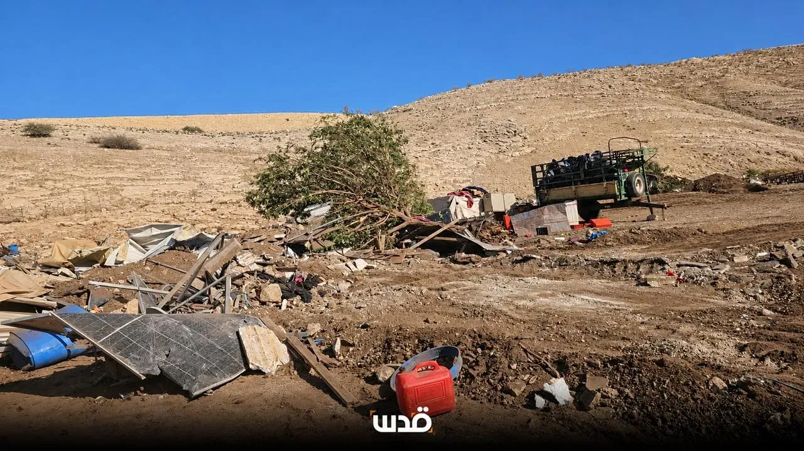
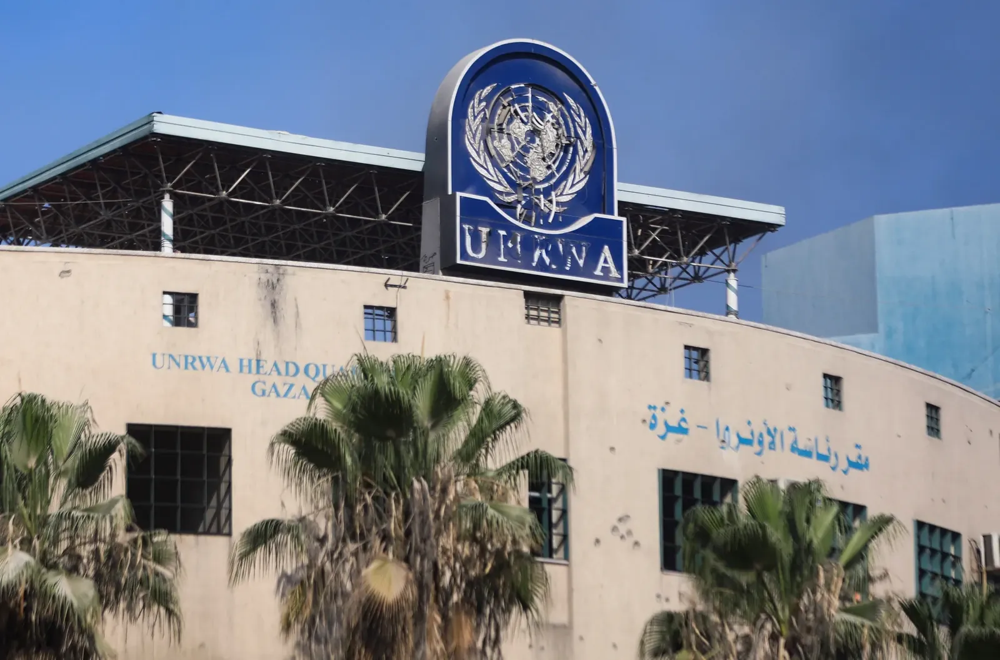
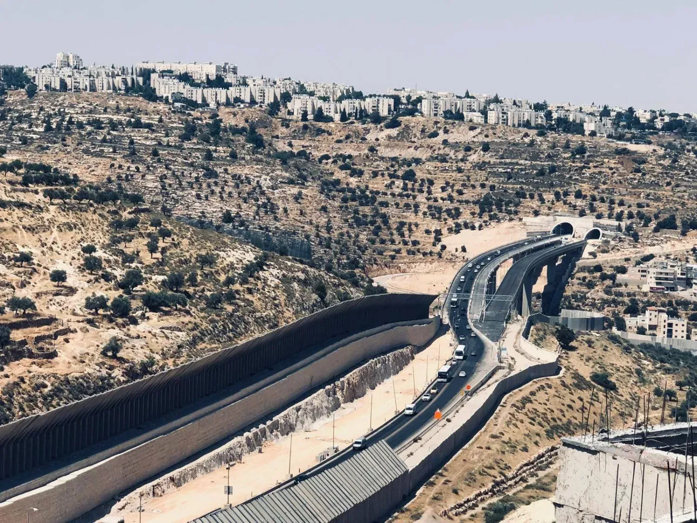
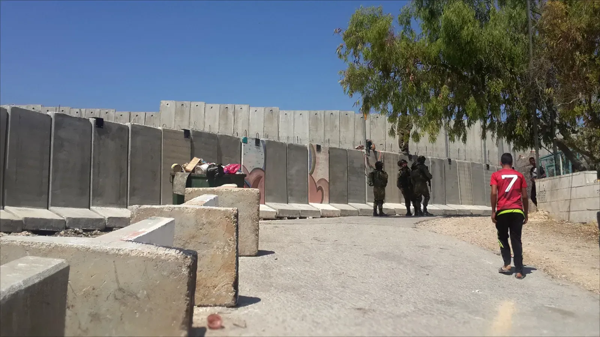
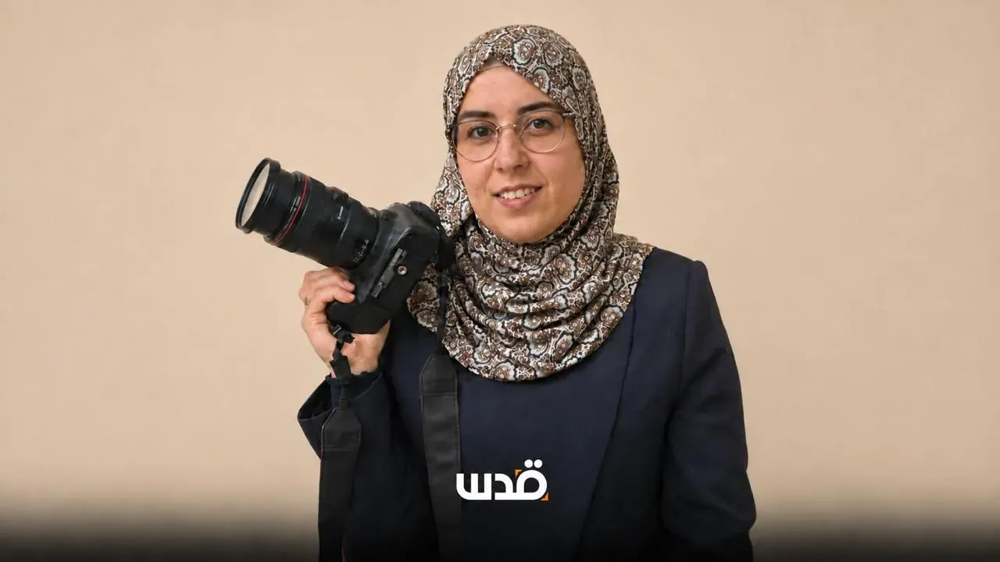
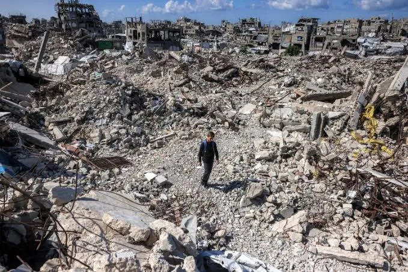
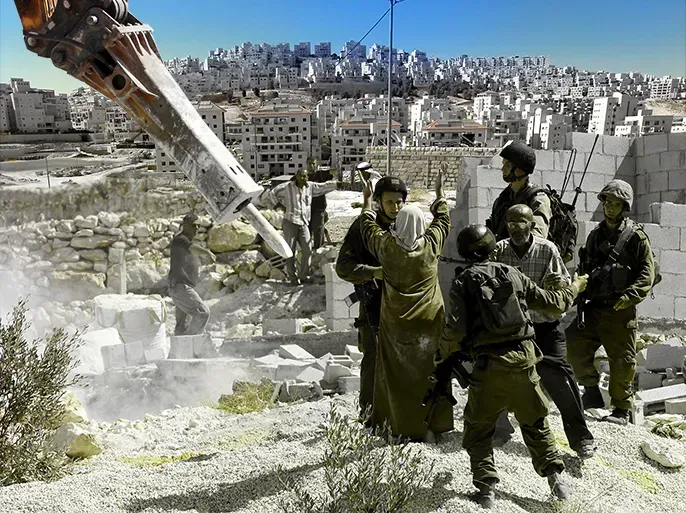

الاحتلال يهدم قرية سمرة التي شهدت ولادة سكانها قبل أكثر من 50 عاماً ويترك أطفالها في العراء
نفذت قوات الاحتلال عملية هدم واسعة في قرية سمرة، التي يعود تاريخ ولادة سكانها فيها إلى أكثر من خمسين عاماً.

نفذت قوات الاحتلال عملية هدم واسعة في قرية سمرة، التي يعود تاريخ ولادة سكانها فيها إلى أكثر من خمسين عاماً.

أطلقت قوات الاحتلال النار تجاه مواطنين في مناطق جنوب القطاع، ما أدى إلى إصابة عدة أشخاص بينهم حالات حرجة.



يواصل الاحتلال توظيف الاقتصاد الاستيطاني لفرض سيطرته على الضفة، بعد إقامة 28 منطقة صناعية في مناطق مختلفة منها.



اقتحامات يومية نفذتها مجموعات منظمة وسط إجراءات مشددة من قوات الاحتلال.

نقص المستلزمات يأتي في ظل الحصار المشدد والقيود على إدخال المعدات الطبية.

أكدت الأونروا أن 94% من سكان القطاع بحاجة عاجلة للمساعدات في ظل تفاقم الأوضاع واستمرار الحصار.

تقارير ميدانية: ربع أسر القطاع تعيلها نساء، في واقع يعكس أعباء نفسية كبيرة في ظل الحصار.



تواصل منتهى الطويل انتظار لحظة اللقاء بابنتها بشرى، التي تفصل بينهما إجراءات الاحتلال التي أعاقت اللقاء والاحتضان.

 04:37
04:37 02:14
02:14 03:20
03:20 01:05
01:05
02:48 05:12
05:12
03:02